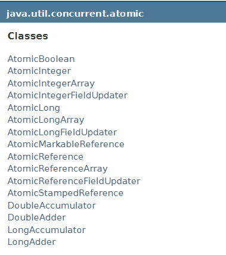
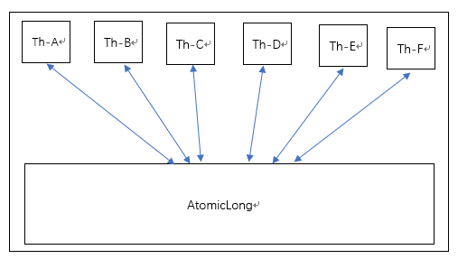
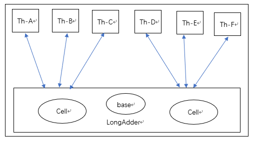

CAS操作
CAS（Compare-And-Swap）
比较并交换(Compare-and-Swap，CAS)是硬件支持的原子性操作之一。 CAS 指令有 3 个操作数，分别是内存地址 V、旧的值 A 和新值 B。当CAS指令执行时，只有当 V 的值等于旧值A，才将 V 的值更新为 B。简单来说，就是CAS操作执行时，要检测旧值是否发生变化，如果变化了则不更新，没有变化才更新。CAS指令从硬件上保证了对单个变量的“读取-修改-写回”的原子性，因此多线程并发时使用CAS更新单个变量时不需要锁，JDK中大量使用了CAS来更新数据。
CAS使用示例：AtomicInteger
java.util.concurrent.atomic包中的整数原子类AtomicInteger，其中的修改变量值的方法都采用了Unsafe类的CAS方法。以下代码使用了AtomicInteger执行了自增的操作：
1 | private AtomicInteger count = new AtomicInteger(); |
以下代码是AtomicInteger中上述两个自增方法的源码：
1 | public final int incrementAndGet() { |
它们均调用了Unsafe类的getAndAddInt()，其源码如下：
1 | public final int getAndAddInt(Object var1, long var2, int var4) { |
参数的含义分别是：var1指示对象的起始内存地址，var2指示该字段相对对象内存地址的偏移，var1和var2决定了对象在内存中的位置。var4指示需要加的值，此处为1。
通过 getIntVolatile(var1, var2) 得到对象的旧值，通过调用 compareAndSwapInt() 来进行 CAS 比较，如果该字段内存地址中的值等于 var5(即没有被改变)，那么就更新内存地址为 var1+var2 的变量为 var5+var4。其中 compareAndSwapInt() 方法在Unsafe类中是native方法。我们注意到该方法在while循环中不断执行，对应的逻辑就是“如果发生冲突则不断尝试执行CAS操作”，这就是基于冲突检测的乐观并发策略。
最后需要注意的是，getAndAddInt()方法返回了var5，该值是旧值。其实add0和add1方法的执行效果是一样的，都是整数原子对象的值+1，由于incrementAndGet()和getAndIncrement()的返回值是整型，而前者的返回值比后者大1，因此容易误会。注意整数原子对象的值+1与它们的返回值无关，它的值是通过CAS操作直接修改的！
CAS的问题
ABA问题
如果一个变量初次读取的时候是A值，并且准备赋值时检测到其仍然是A值，那么我们能说它的值没有被其他线程修改过吗？
如果这段时间它的值曾被其他线程修改为B，后来又被改回了A，那么CAS操作就会误认为它从未改变过，该漏洞称为“ABA”问题。J.U.C包为了解决该问题，提供了一个带有时间戳的原子引用类AtomicStampedReference。不过绝大部分情况ABA问题并不会影响程序开发的正确性，因此该类不常使用。
若自旋时间过长则开销大
如果自旋CAS长时间不成功，那么它会一直占用CPU资源。
只能保证单个共享变量的原子操作
如果要保证对多个共享变量操作的原子性，可以将多个共享变量放入AtomicReference对象中，来保证原子性。
Unsafe类
JDK中的rt.jar中sun.misc包中的Unsafe类提供了硬件级别的原子性操作，Unsafe类中的方法绝大部分都是native方法，它们使用JNI访问本地C++实现库。
Unsafe类主要提供一些用于执行低级别、不安全操作的方法，如直接访问系统内存资源、自主管理内存资源等，这些方法在提升Java运行效率、增强Java语言底层资源操作能力方面起到了很大的作用。但由于Unsafe类使Java语言拥有了类似C语言指针一样操作内存空间的能力，这无疑也增加了程序发生相关指针问题的风险。因此JDK开发组限制了开发人员通过一般方式使用Unsafe类，比如如下代码会报异常：
1 | priavte static final Unsafe unsafe = Unsafe.getUnsafe(); |
J.U.C中原子类获取Unsafe对象就是如此，Unsafe类提供静态方法getUnsafe()返回Unsafe对象，但是如果在用户程序中这样写就会报异常。原因在于getUnsafe()方法源码：
1 | public static Unsafe getUnsafe() { |
显然由于用户类是由AppClassLoader加载的，因此会报异常。
要想使用Unsafe类，可以使用反射来获取unsafe对象：
1 | static final Unsafe unsafe; |
Unsafe类总体功能如下：

其中原子操作只支持如下三个方法：
1 | public final native boolean compareAndSwapObject(Object paramObject1, long paramLong, Object paramObject2, Object paramObject3); |
其余关于CAS的常用方法有：getAndAddInt, getAndAddLong, getAndSetInt, getAndSetLong, getAndSetObject。
原子包
原子包即java.util.concurrent.atomic包，它包含了一系列的原子性操作类，这些类都是使用非阻塞算法CAS实现的。一共有如下类：

AtomicInteger
依旧以AtomicInteger为例，其余原子类原理类似。
常用方法
public final int get()：获取当前值
public final int getAndSet(int newValue)：获取当前值，并设置新值
public final int getAndIncrement()：获取当前值，并自增
public final int getAndDecrement()：获取当前值，并自减
public final int getAndAdd(int delta)：获取当前值，并加上预期的值
void lazySet(int newValue): 最终会设置成newValue, 使用lazySet设置值后，可能导致其他线程在之后的一小段时间内还是可以读到旧的值。
源码分析
以下为部分源码：
1 | public class AtomicInteger extends Number implements java.io.Serializable { |
由源码可知：使用volatile修饰变量，保证了变量的可见性与有序性；使用CAS操作变量，保证了操作的原子性。因此最终效果与使用synchronized一致。
原子更新基本类型
AtomicBoolean
AtomicInteger
AtomicLong
上述三个原子类类似。
原子更新数组
使更新数组的某个元素满足原子性
- AtomicIntegerArray: 原子更新整型数组里的元素。
- AtomicLongArray: 原子更新长整型数组里的元素。
- AtomicReferenceArray: 原子更新引用类型数组里的元素。
原子更新引用类型
- AtomicReference: 原子更新引用类型。
- AtomicStampedReference: 原子更新引用类型, 内部使用Pair来存储元素值及其版本号。
- AtomicMarkableReference: 原子更新带有标记位的引用类型。
原子更新Field
- AtomicIntegerFieldUpdater: 原子更新整型的字段的更新器。
- AtomicLongFieldUpdater: 原子更新长整型字段的更新器。
- AtomicReferenceFieldUpdater: 原子更新引用类型字段的更新器。
这三个类均为抽象类，使用方式都差不多，是基于反射的原子更新字段的值。要想原子地更新字段类需要两步:
- 第一步，因为原子更新字段类都是抽象类，每次使用的时候必须使用静态方法newUpdater()创建一个更新器，并且需要设置想要更新的类和属性。
- 第二步，更新类的字段必须使用public volatile修饰。
JDK8新增的原子操作类LongAdder和DoubleAdder
使用AtomicLong时，在高并发下大量线程会同时去竞争更新同一个原子变量，那么就会由大量线程因为不断自旋而浪费CPU资源。因此JDK8新增了LongAdder用于克服在高并发下使用AtomicLong的缺点，提升性能。
如图所示，使用AtomicLong时，是多个线程同时竞争同一个原子变量：

而使用LongAdder时，则为：

LongAdder维护了一个Cell数组，每个Cell里有一个初始值为0L的long型变量，这样在同等并发量的情况下，争夺单个变量更新操作的线程减少。并且如果多个线程争夺同一个Cell原子变量失败了，它并不是在当前Cell变量上一直自旋CAS重试，而是尝试在其他Cell的变量上进行CAS，这个改变增加了当前线程重试CAS成功的可能性。最后，在获取LongAdder当前值时，把所有Cell变量的value累加再加上base返回。
Cell数组默认是null，只有在高并发的情况下才会创建它。在并发量少的时候所有的累加操作都是对base变量进行的，此时与AtomicLong类似。
Cell类使用了@sun.misc.Contended修饰进行字节填充，这是因为数组元素的内存地址连续，为了避免伪共享。
总结：LongAdder在AtomicLong的基础上将单个变量的更新压力分散到各Cell，在低并发的时候通过对base的直接更新可以很好的保障与AtomicLong的性能基本保持一致，而在高并发的时候通过分散提高了性能。
缺点是LongAdder在求和的时候如果有并发更新，可能导致统计的数据有误差。
DoubleAdder与LongAdder类似。
LongAccmulator和DoubleAccumulator
LongAdder可以看作是LongAccumulator的一个特例。LongAccumulator的构造方法如下：
1 | public LongAccumulator(LongBinaryOperator accumulatorFunction, long identity){ |
使用LongAdder其实就相当于如下使用LongAccumulator:
1 | LongAccumulator accumulator = new LongAccumulator(new LongBinaryOperator(){ |
LongAccumulator可以自定义双目运算规则（applyAsLong()的返回值就是要更新的值。在LongAdder中该值就是base+x，x为其add方法的参数），并且可以指定base的初始值，而LongAdder只能默认base为0。
如何实现AtomicByte/AtomicFloat/AtomicDouble?
查看atomic包文档描述，结尾处写道：Additionally, classes are provided only for those types that are commonly useful in intended applications. For example, there is no atomic class for representing byte. In those infrequent cases where you would like to do so, you can use an AtomicInteger to hold byte values, and cast appropriately. You can also hold floats using Float.floatToRawIntBits(float) and Float.intBitsToFloat(int) conversions, and doubles using Double.doubleToRawLongBits(double) and Double.longBitsToDouble(long) conversions.
由文档描述可知，使用Float和Double的方法转换并包装AtomicInteger即可。
参考：
《Java并发编程之美》
《深入理解Java虚拟机》
https://www.pdai.tech/md/java/thread/java-thread-x-juc-AtomicInteger.html